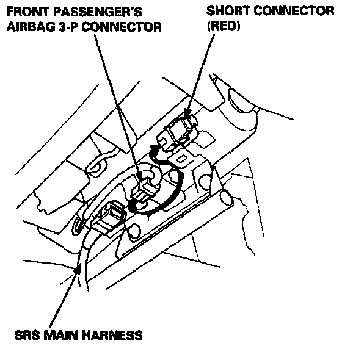
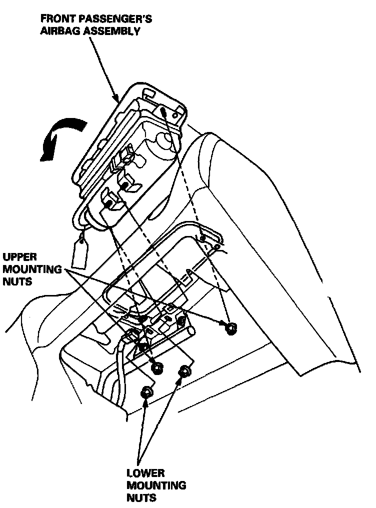
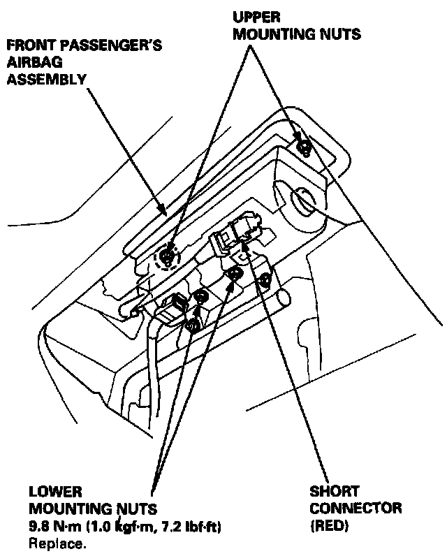
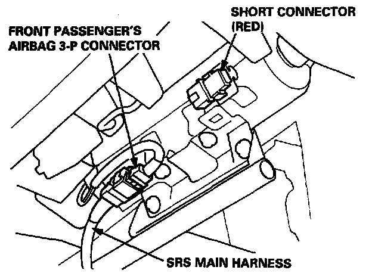

Passenger Side
AIRBAG ASSEMBLY REPLACEMENTWARNING: STORE REMOVED AIRBAG ASSEMBLY WITH THE PAD SURFACE UP, IF THE AIRBAG IS IMPROPERLY STORED FACE DOWN, ACCIDENTAL DEPLOYMENT COULD PROPEL THE UNIT WITH ENOUGH FORCE TO CAUSE SERIOUS INJURY.
CAUTION:
- Do not install used SRS parts from another car. When repairing, use only new SRS parts.
- Carefully inspect the airbag assembly before you install it. Do not install an airbag assembly that shows signs of being dropped or improperly handled, such as dents, cracks or deformation.
- Always keep the short connector(s) (RED) on the airbag(s) when the harness is disconnected.
- Do not disassemble or tamper with the airbag assembly.
NOTE: The original radio has a coded theft protection circuit. Be sure to get the customer's code number before disconnecting the battery cables.
REMOVAL
1. Disconnect the battery negative cable, then disconnect the positive cable.
2. Connect the short connector(s) (RED) to the airbag side of the connector(s):
- Remove the glove box damper, then remove the glove box.

- Disconnect the front passenger's airbag 3-P connector from the SRS main harness, and connect the short connector (RED) to the front passenger's airbag 3-P connector.
3. Remove the airbag.

- Remove the four mounting nuts, then lift the front passenger's airbag out of the dashboard.
NOTE: Do not confuse the lower mounting nuts with the upper mounting nuts. The upper mounting nuts are not self-locking.
CAUTION: Be sure to install the SRS wiring so that it is not pinched or interfering with other car parts.
INSTALLATION
4. Install the new airbag.
- Place the front passenger's airbag assembly in the dashboard.

- Loosely install all four mounting nuts.
- Tighten the upper two nuts first, then the lower two nuts. Adjust the lower mounting bracket if necessary.
5. Remove and properly store the short connector(s), then reconnect the airbag connector(s).

- Remove the short connector (RED) from the front passenger's airbag connector, then connect the airbag 3-P connector to the SRS main harness 3-P connector.
- Then reinstall the glove box on the dashboard.
6. Connect the battery positive cable, then the negative cable.
7. After installing the airbag assembly, confirm proper system operation:
- Turn the ignition ON (II): The instrument panel SRS indicator light should come on for about six seconds and then go off.
- Make sure both horn buttons work.
- Take a test drive and make sure the cruise control set/resume switch works.
8. Enter the code number to restore radio operation.